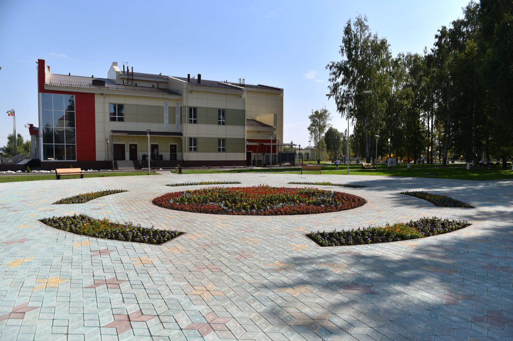

Экономика Буинска
Буинск является экономическим центром всего предволжского региона Татарстана.
На его территории находятся:
- Буинский спиртзавод
- Буинский электромеханический завод
- Предприятия пищевой промышленности:
- Мясокомбинат
- Маслосыродельный завод
- Дрожжевой завод
- Буинский сахарный завод
- Буинский комбикормовый завод
- Буинский машиностроительный завод — филиал КМПО
Образование и культура
- Шесть средних школ:
- Школа № 1
- Лицей № 2
- Гимназия № 5
- Лицей-интернат № 6 (школа для одарённых детей)
- Школа им. Р. З. Сагдеева
- Школа с преподаванием на татарском языке им. М. Вахитова
- Буинское медресе
- Буинские филиалы республиканских вузов
- Медицинское училище
- Ветеринарный Техникум
- Буинский краеведческий музей
- Буинский драматический театр
- Молодёжный Центр
- Досуговый Центр
- Центр культурного развития
- Центр внешкольной работы
- Здание Земской управы
| Численность населения по годам (тысяч жителей) |
| 1856 |
3.4 |
1979 |
15.6 |
2005 |
19.7 |
2014 |
20.7 |
| 1897 |
4.2 |
1989 |
16.8 |
2006 |
19.7 |
2015 |
20.9 |
| 1913 |
5.9 |
1992 |
17.2 |
2007 |
19.8 |
2016 |
20.9 |
| 1926 |
4.7 |
1996 |
18.0 |
2008 |
20.0 |
2017 |
20.9 |
| 1931 |
3.5 |
1998 |
18.5 |
2010 |
20.4 |
2018 |
20.8 |
| 1939 |
5.9 |
2000 |
18.4 |
2011 |
20.4 |
2019 |
20.7 |
| 1959 |
9.0 |
2001 |
18.4 |
2012 |
20.5 |
|
|
| 1970 |
14.9 |
2003 |
19.7 |
2013 |
20.7 |
|
|
